Гравюра на дереве
Лубок резали на доске — дорого, тираж небольшой, лист выходил грубым.
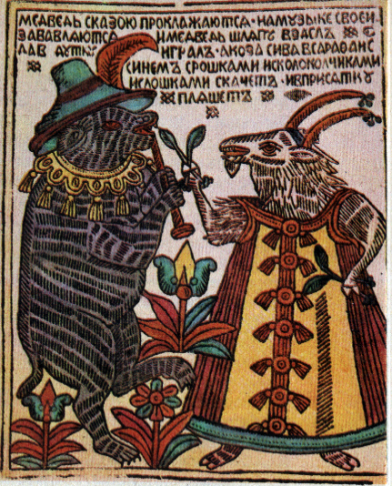
До литографии смешной рисунок выходил десятками и стоил дорого. Камень Зенефельдера сделал оттиск дешёвым — и смех тысячами разошёлся по России.
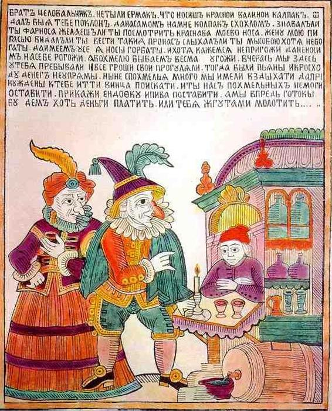
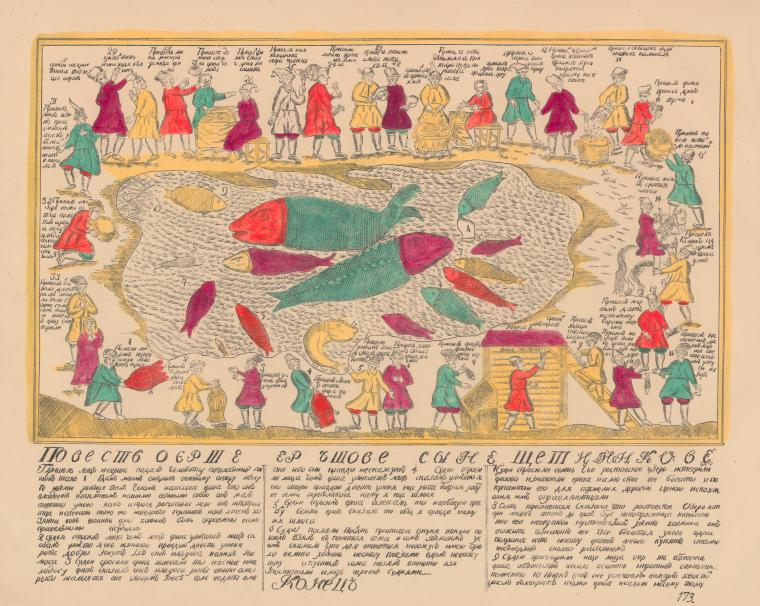
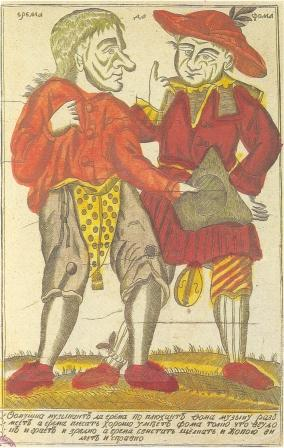
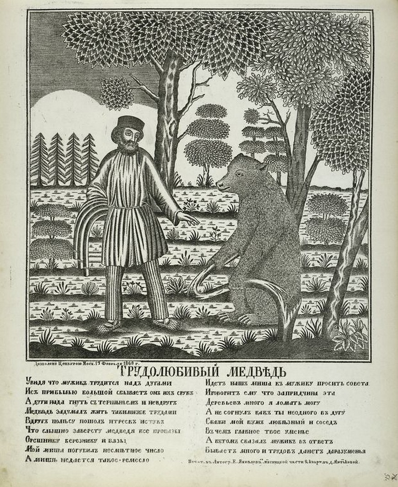
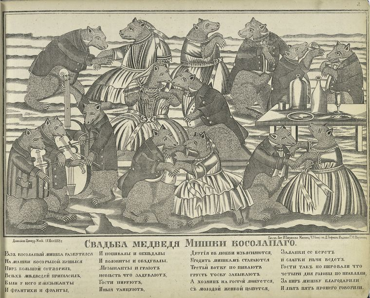
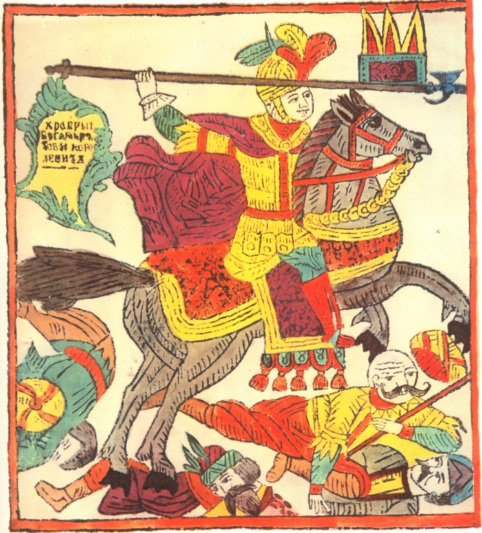
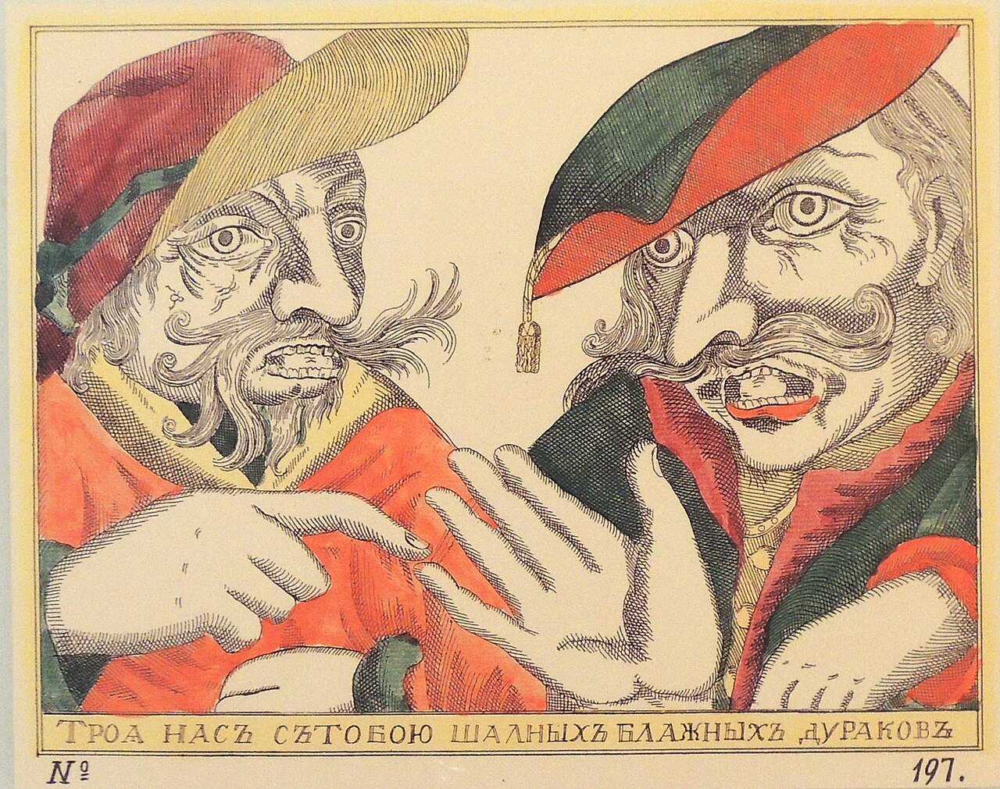
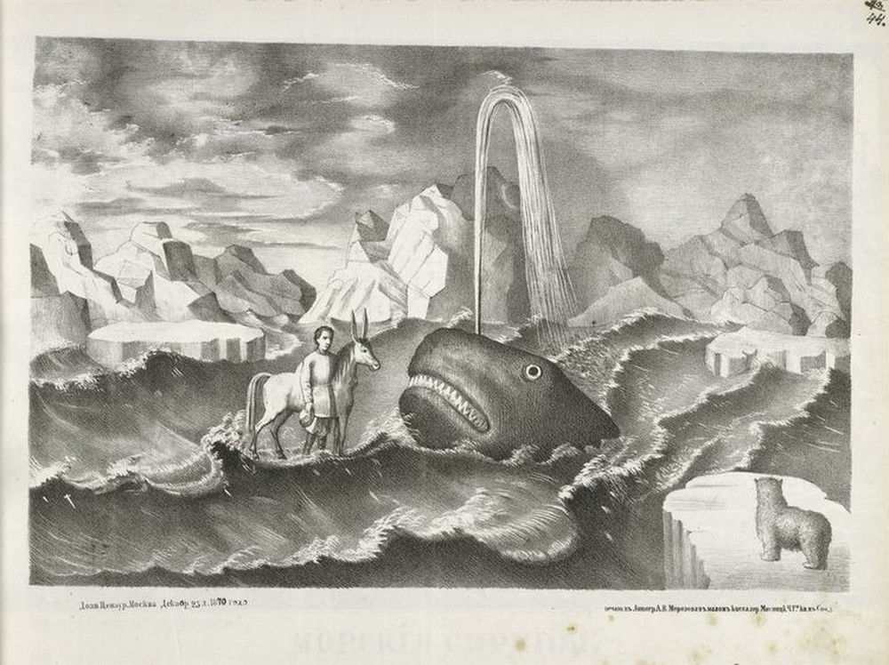
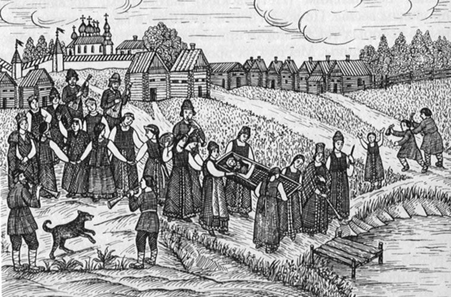
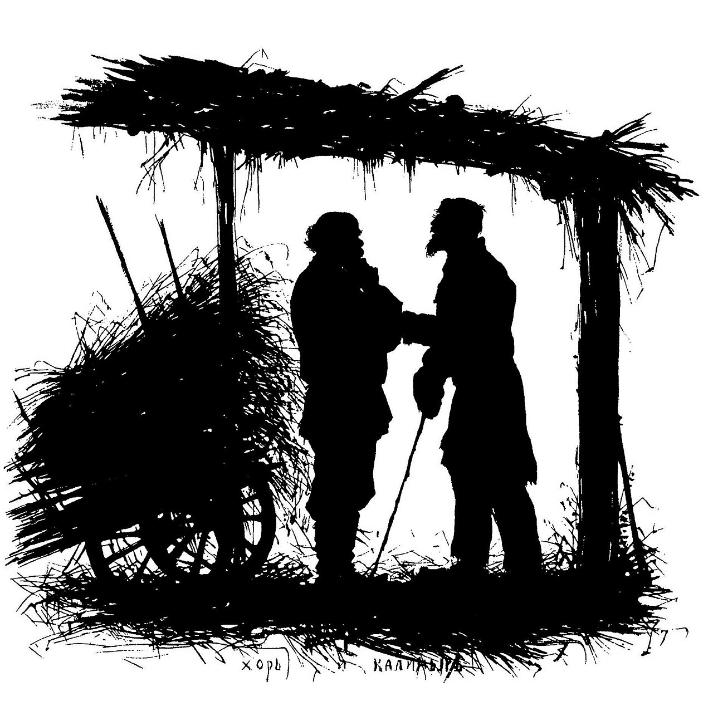
Не ищи «правильный» ответ. Зафиксируй первое чувство — до того, как музей раскроет, что все эти листы сделаны одной технологией.
Пройди четыре шага литографии: нанеси рисунок жирной тушью, смочи камень водой, прокатай краской и прижми бумагу. Краска ляжет только на рисунок — и оттиск готов.
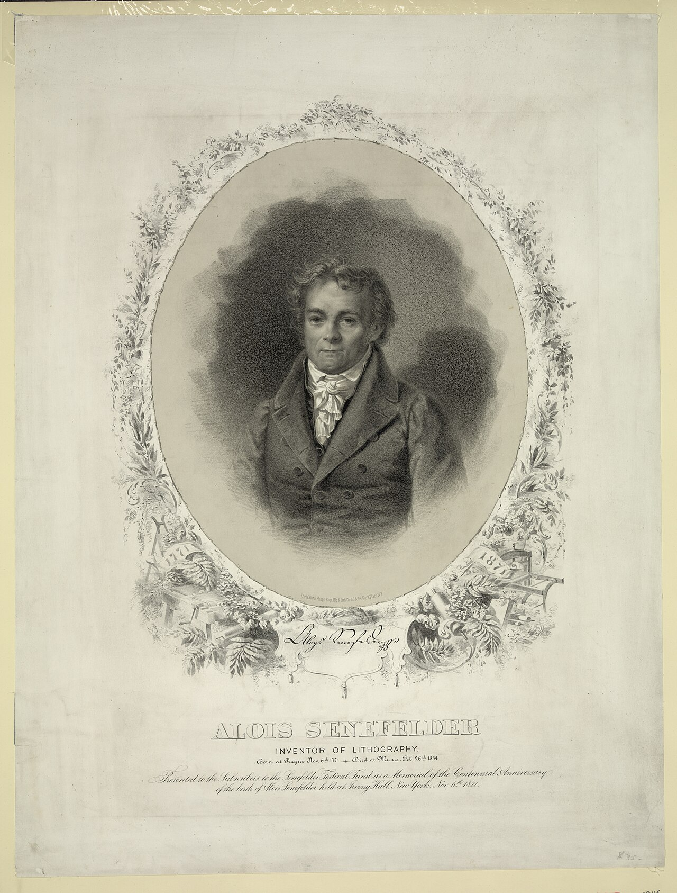
Литография держится на том, что жир и вода не смешиваются: рисунок наносят жирной тушью, потом камень смачивают — вода не смачивает жирный рисунок, а краска, наоборот, липнет только к нему. Прижмёшь бумагу — и получишь оттиск, который можно повторить сотни раз.
Листай ряд слева направо. Лубки и силуэтные листы XIX века — это и есть результат дешёвой печати: смешная картинка добралась из лавки до любой избы.
В 1796 году немец Алоиз Зенефельдер случайно нашёл способ печатать с камня. В Россию литография пришла в начале XIX века — и скоро тиражные картинки уже расходились по ярмаркам.
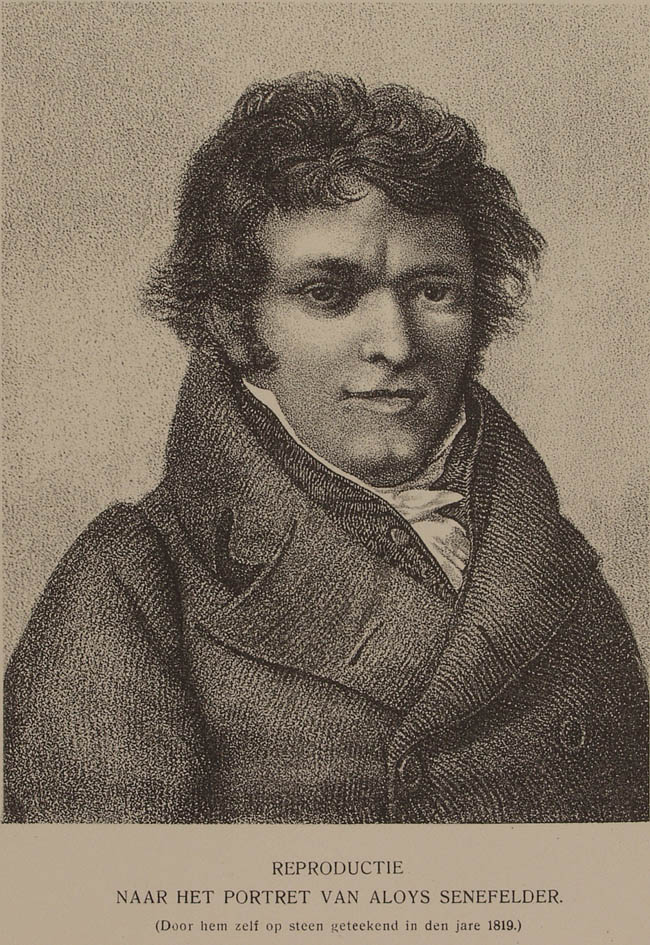
Лубок резали на доске — дорого, тираж небольшой, лист выходил грубым.
Рисунок на камне — дешевле, быстрее, оттиск можно повторить сотни раз.
Дешёвая картинка пошла в народ — смех стал массовым.
До дешёвой печати развёрнутый лист с картинкой был почти роскошью. Литография и тиражный лубок сделали его товаром для ярмарки: любой мог унести смех домой — поэтому картинок сохранились тысячи, и почти все разные.
Литографию в 1796 году изобрёл немец Алоиз Зенефельдер: рисунок наносят на камень жирной тушью, камень смачивают водой, а краска ложится только на жирный рисунок. Это сделало печать дешёвой и быстрой. В России техника прижилась в начале XIX века и удешевила тиражные картинки — гравюру на дереве, а затем литографированный лубок. Факт — изобретатель, год и принцип печати; позиция художника — что именно он оставлял на листе; вывод музея — дешёвый тираж впервые сделал карикатуру по-настоящему массовой.
Литография изобретена в 1796 году Алоизом Зенефельдером.
Жир и вода не смешиваются: краска ложится только на рисунок.
Отделяем технику от сюжета и от того, как картинка дошла до зрителя.
После печати и проверки себя здесь появится твой путь — от первого чувства к пониманию технологии.
Итог: 0/100 баллов. Заверши расследование и проверь себя.
Дата — номер музейного выпуска, а не годовщина события. Первые выпуски открыты; остальные страницы появятся по очереди.
Здесь разделены сам исторический предмет, музейная карточка и цифровой файл, показанный на странице. Все листы — исторические оригиналы в публичном достоянии; реконструкций и сгенерированных изображений на странице нет.
| Экспонат | Атрибуция предмета | Держатель и номер | Источник файла на странице | Правовой статус файла |
|---|---|---|---|---|
| «Медведь с козою» | Народная картинка (лубок), XIX век, аноним. | Wikimedia Commons, Category:Lubok | Файл на странице: media/lubok-medved-koza.png. | Public Domain. |
| «Фарнос Красный Нос» | Народная картинка (лубок), XIX век, аноним. | Wikimedia Commons, Category:Lubok | Файл на странице: media/lubok-farnos.jpg. | Public Domain. |
| «Ёрш Ершович» | Народная картинка (лубок), XIX век, аноним. | Wikimedia Commons, Category:Lubok | Файл на странице: media/lubok-ersh.jpg. | Public Domain. |
| «Фома и Ерёма» | Народная картинка (лубок), XIX век, аноним. | Wikimedia Commons, Category:Lubok | Файл на странице: media/lubok-foma-erema.jpg. | Public Domain. |
| «Медведь» Крылова | Народная картинка (лубок) по басням И. А. Крылова, XIX век, аноним. | Wikimedia Commons, Category:Lubok | Файл на странице: media/lubok-bear-krylov.jpg. | Public Domain. |
| «Свадьба медведя» | Народная картинка (лубок), XIX век, аноним. | Wikimedia Commons, Category:Lubok | Файл на странице: media/lubok-bear-wedding.jpg. | Public Domain. |
| «Бова-королевич» | Народная картинка (лубок), XIX век, аноним. | Wikimedia Commons, Category:Lubok | Файл на странице: media/lubok-bova.jpg. | Public Domain. |
| Лубок с шутами | Народная картинка (лубок), XIX век, аноним. | Wikimedia Commons, Category:Lubok | Файл на странице: media/lubok-fools.jpg. | Public Domain. |
| «Конёк-Горбунок» | Народная картинка (лубок) по сказке П. П. Ершова, 1870, аноним. | Wikimedia Commons, Category:Lubok | Файл на странице: media/lubok-konek.jpg. | Public Domain. |
| «Похороны Костромы» | Народная картинка (лубок), XIX век, аноним. | Wikimedia Commons, Category:Lubok | Файл на странице: media/lubok-kostroma.jpg. | Public Domain. |
| «Хорь и Калиныч» | Елизавета Бём, 1883. Силуэтный лист. | Wikimedia Commons, Category:Lubok | Файл на странице: media/bohm-khor.jpg. | Public Domain. |
| Портрет Алоиза Зенефельдера | Алоиз Зенефельдер (1771–1834), изобретатель литографии. | Wikimedia Commons, Category:Alois_Senefelder | Файл на странице: media/senefelder.jpg. | Public Domain. |
| Портрет Алоиза Зенефельдера (второй) | Алоиз Зенефельдер (1771–1834), изобретатель литографии. | Wikimedia Commons, Category:Alois_Senefelder | Файл на странице: media/senefelder-2.jpg. | Public Domain. |
Маркировка музея: все изображения на странице — исторические оригиналы в публичном достоянии. Реконструкций и сгенерированных изображений нет. Точные даты и атрибуция части народных картинок сверяются по русским каталогам на этапе финального факт-чека.
На примере одного выпуска — темы, письма читателей и границы разрешённой критики.
Следующий выпуск готовитсяВернись в город-музей и выбери следующую историю русской цивилизации.